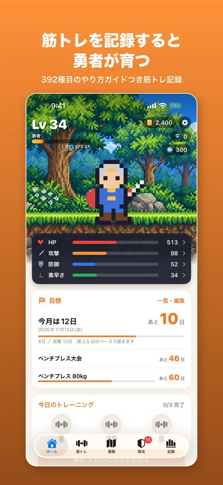
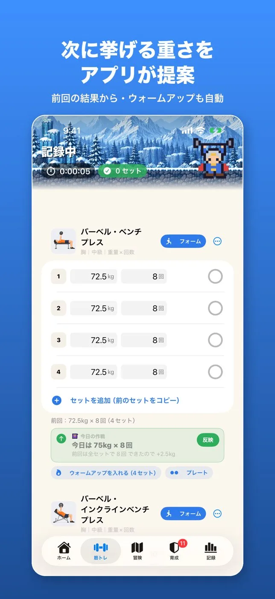
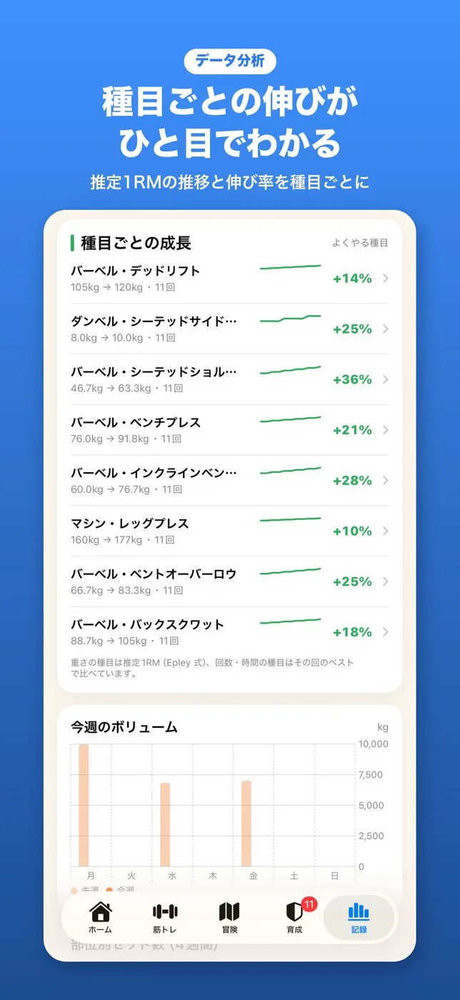

筋トレクエストは、筋トレの記録アプリと16bit風のRPGがひとつになったiPhoneアプリです。セットを記録すると経験値（XP）と冒険のエネルギー（EN）がたまり、鍛えた部位に応じて勇者の能力が伸びます。価格は無料で、筋トレの記録・392種目のガイド・冒険は無料のまま使えます。この記事の内容は、2026年11月20日時点の App Store の掲載内容にもとづいています。
01筋トレクエストでできること

できることは、大きく分けて「記録する」「やり方を調べる」「勇者を育てる」「ふり返る」の4つです。主な機能を表にまとめます。
| 機能 | 中身 | 無料／Pro |
|---|---|---|
| 筋トレの記録 | 392種目から選んで記録。重量×回数・回数・時間・距離など7つの記録形式 | 無料 |
| やり方ガイド | 全392種目に、イラスト・手順・対象の筋肉・注意点など | 無料 |
| 勇者の冒険 | 10のエリア・100のステージ・10体のボス | 無料 |
| 成長フォト | 体の写真を残すのは無料。スライドショー・見比べ・動画の書き出しは Pro | 一部 Pro |
| 食事管理 | カロリーとPFC（たんぱく質・脂質・炭水化物）の記録 | Pro |
| 目標と期限 | 大会の日や目標重量などを、期限つきで3つまで | Pro |
種目は、胸・背中・肩・腕・脚・体幹・全身・有酸素などを収録しています。名前のほか、英語名、BP・RDL などの略称、部位、器具でも検索できます。一覧に無い種目は、カスタム種目として何件でも足せます。
02記録すると勇者が育つしくみ
筋トレのセットを記録すると、XP と EN がたまります。伸びる能力は鍛えた部位で変わります。胸・肩は攻撃、脚は防御とHP、有酸素は素早さ、という対応です。
勇者は EN を使って自動で冒険します。冒険は1分に1戦ずつ進み、アプリを閉じている間のぶんも最大8時間まとめて進みます。ボスだけは、作戦を確認してから自分のタイミングで挑みます。装備は100種類、スキルは10種類あり、週・月のミッション、実績、称号、勇者の外見の変更もあります。
続けやすさにかかわる決まりは次の3つです。
- EN は筋トレの記録でだけたまります。課金や広告で XP・EN が増えることはありません。
- 休んだ日のペナルティはありません。
- Game Center を使うと、フレンドとレベルや累計セット数を比べられます（使うかどうかは自由です）。
ヘルスケアとの連携も任意です。許可すると、ヘルスケアにあるワークアウトの日時・時間・運動の種類を読み取り、XP と EN に反映します。読み取りだけで、書き込みはしません。手動で記録したトレーニングと同じ運動は、二重に数えません。
03使い方：記録から冒険までの手順

- 種目を選ぶ。 名前・略称・部位・器具で検索します。よく組む種目は、マイメニューとして5つまで登録でき、まとめて記録に追加できます。
- セットを入力する。 前回の重量・回数が引き継がれます。セットの複製と並べ替え、休憩タイマー、メモが使えます。RPE（そのセットをどれくらいきつく感じたかの数字）も残せます。
- 迷ったら「今日の作戦」を見る。 前回の結果から、次に挙げる重さと回数を提案します。全セットできたら重さを上げ、届かなければ回数を伸ばす、という決め方です。ウォームアップのセットも自動で入り、バーに付けるプレートも計算します。
- やり方はガイドで確かめる。 記録の途中で開いても、入力中の内容は消えません。通信なしで読めます。
- トレーニングを確定する。 このとき、その日の体の写真を撮るか、写真ライブラリから添付できます（任意）。
- 冒険を見る。 たまった EN で勇者が自動で進みます。ボスに着いたら、作戦を確認して挑みます。
04記録をふり返る機能

記録がたまると、次の形で見返せます。
- 頻度の推移と推定消費カロリーを、12週ぶんのグラフに
- 種目ごとの推定1RM（1回だけ挙げられる重さの推定値）の推移と伸び率
- カレンダー、自己ベスト、週ごとのボリューム、部位別のセット数
- 強さランクスクワット・ベンチプレス・デッドリフトの推定1RMと体重から、E〜SS のランクを表示
成長フォトは、3:4の枠で位置と大きさを合わせて切り抜きます。前回の写真を薄く重ねられるので、同じ位置にそろえて撮れます。撮りためた写真は日付順のスライドショーで見られます（Pro。無料版は広告を見ると1回再生）。写真は端末の中だけに保存されます。
05無料でできることと Pro の料金
筋トレの記録・392種目のガイド・冒険は無料です。Pro にすると、次の機能が加わります。
- 成長フォトのスライドショー・見比べ・動画の書き出し
- 食事管理（文部科学省「日本食品標準成分表（八訂）増補2023年」の2,538食品から検索、マイ食品の登録、1日の目標の自動計算）
- 目標と期限（ホームに「あと◯日」と進み具合を表示）
- 広告なし
- 月・年の推移と、期間を指定した分析
- 記録の CSV 書き出し
Pro の料金は、年額2,200円、月額300円、買い切り3,300円の3つです（2026年11月20日時点）。どれを選んでも Pro の機能は同じです。
注意年額と月額は自動更新のサブスクリプションです。期間の終わる24時間前までに解約しない限り、自動で更新されます。解約は iPhone の「設定」→ 自分の名前 →「サブスクリプション」からできます。
06使う前に知っておきたいこと
- アカウント登録は不要です。 記録・写真・食事は端末の中だけに保存されます。機種変更のときは、合言葉で暗号化したバックアップファイルを作って移します。
- 数字は目安です。 推定消費カロリー・食事の目標・強さランクは目安として表示されます。
- 医療の助言ではありません。 このアプリは、病気の診断・治療・予防を目的としたものではありません。種目のやり方は一般的な情報です。痛みや違和感があるときは中止し、持病やけががある方、食事の制限がある方は、医師などの専門家に相談してください。
- 公開中の版は 1.0.1 です。 この版では種目ガイドが見直され、動きが分かりにくかった・誤っていた42種目の絵が描き直されました。
07まとめ
筋トレクエストは、記録したぶんだけ勇者が進むアプリです。EN は筋トレの記録でしかたまらず、休んでもペナルティはありません。記録・ガイド・冒険は無料で使えるので、まずは1回ぶんのトレーニングを記録して、勇者がどう動くかを見てみてください。写真のスライドショーや食事管理まで使いたくなったら、Pro を検討する順番で足ります。
ダウンロードは App Store から。App Store で見る